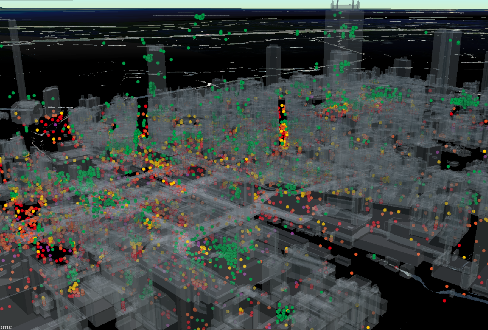

filtered_czml 系3本と、高さで線の色が変わる HEIGHT_HATcolor_HAEpos.py を1ページで扱える静的HTMLです。モードに応じて必要な入力欄とコマンドを切り替えます。
filtered_czml.py / filtered_czml_trail.py / filtered_czml_trail_description.py の3本で共通です。HTMLは input() に流し込む回答列を生成します。

trailなしの基本版です。まず抽出条件が正しいかを軽く確認したい時に向きます。
使用スクリプト: filtered_czml.py*.czml を確認する